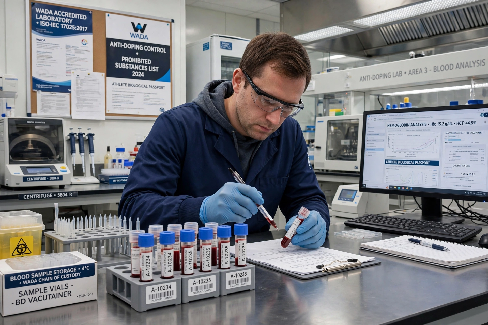

Athlete Biological Passport
| Athlete Biological Passport | |
|---|---|
| Type | Anti-doping monitoring programme |
| Administered by | World Anti-Doping Agency (WADA) and international federations |
| Introduced | 2009 (haematological module) |
| Modules | Haematological, steroidal, endocrine |

The Athlete Biological Passport (ABP) is an individual electronic record for professional athletes in which profiles of biological markers of doping and results of doping tests are collated over a period of time. Rather than detecting a prohibited substance directly, the passport tracks selected biological variables longitudinally; abnormal variations can indicate doping and lead to targeted testing or a sanction.
How it works
The haematological module monitors variables such as haemoglobin concentration and reticulocyte percentage, which change with blood manipulation such as erythropoietin (EPO) use or blood transfusion. The steroidal module, added in 2014, tracks urinary steroid ratios. An adaptive statistical model establishes each athlete's individual reference ranges, and an expert panel reviews atypical findings before any case proceeds.
History and use
The concept was pioneered in cycling by the UCI, and WADA published its first ABP operating guidelines in 2009. The passport has since been adopted across Olympic sports and has underpinned a number of high-profile sanctions upheld by the Court of Arbitration for Sport, including cases against endurance athletes in cycling and athletics.
See also: Doping in sport · World Anti-Doping Agency · Blood doping